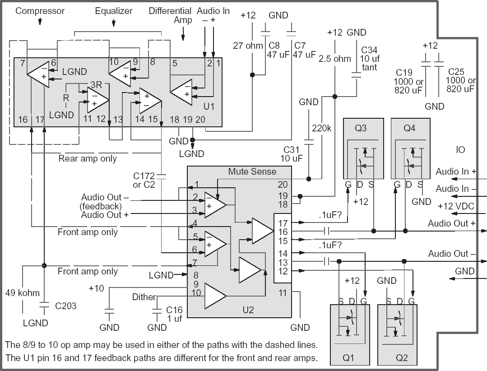
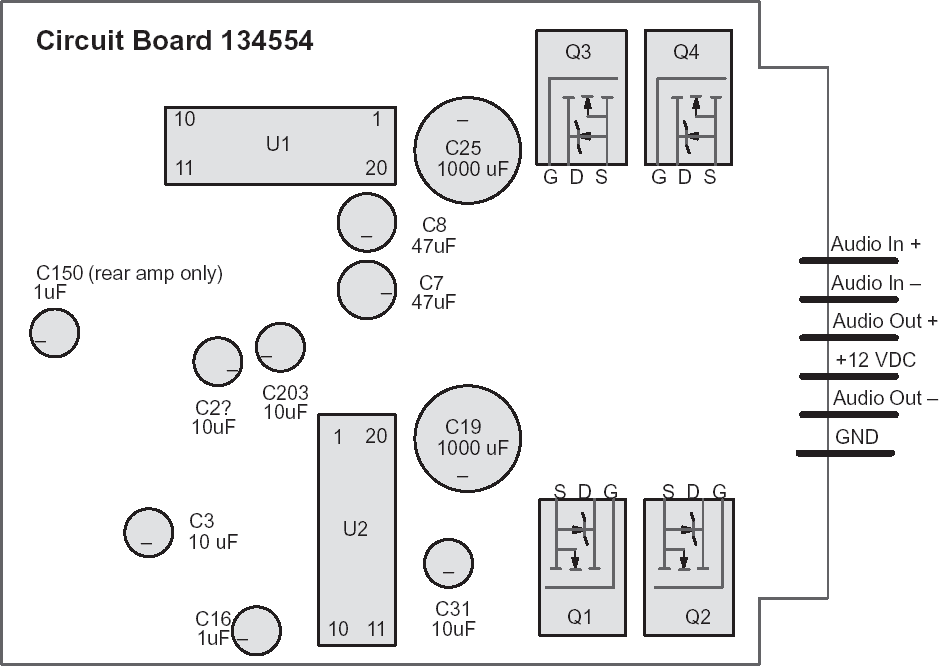

These notes primarily deal with the Bose amplifiers which were used in the 1991 ZR–1 Corvette. I have included information which should be correct for other C4 Corvettes and for other applications. Most of the testing was done only on the 91 model amps.

Caution: The signal ordering is not identical for all Bose amplifiers.
134554 amps with pigtail: third wire = audio out fourth wire = +12 VDC
136898 amps with 6 pin connector: third pin = +12 VDC fourth pin = audio out
The LGND signal is a signal ground, it is not a power supply ground connection. It is a common connection for most of the U1 filter components and some of the U2 filter components. It should measure around 5.0 VD C.
| Major Components | |
| U1 | 121661/Front 131454/Rear, Op Amp for compression & equalization |
| U2 | 134499 Class D amplifier, drives Q1 – Q4 |
| Q1, Q2, Q3, & Q4 | IRFIZ24 manufactured by International Rectifier |
The generic signal flow diagram should be applicable for many Bose amplifiers. The connections do not indicate a direct connection, they only indicate the signal path. The signal path may contain resistors, capacitors, or inductors. Except for the FETs, the arrows represent signal flow, not diodes.
Signal Flow
U1 receives the audio input signal, processes it, and passes it to U2. U2 uses the audio signal to
modulate the square waves which drive the four output FETs. The signals from the FETs are filtered
through the 2 smaller wirewound inductors(L2 & L3) to drive the audio out speaker inputs. U1 contains
op–amps used for equalization and compression. U2 is a class D amplifier. The large wirewound
inductor(L1) and the 2 large electrolytic capacitors(C19 & C25) are used to clean up the 12
volt power. The signal ground output from U1 pin 19 provides the DC reference level for the audio
signal on the board.
There are two closed loops in the design. In the first loop the feedback can squelch the output of the compressor in U1. The compressor loop insures the peak to peak level of the signal stays within the desired limits. In the second loop the op–amp on U2 pins 3, 2, & 1 monitors the FET outputs. This op–amp controls the class D square wave generation in U2. When the FET outputs have been at one voltage level for TBD time, the op–amp inverts the outputs.
Equalization Codes
The circuit board for the Bose amplifier is designed to support multiple applications. The filtering
characteristics for the various applications are selected by populating the board with different sets
of components in the filtering section. The differences include different versions of U1, 0 ohm shorting
resistors to change the interconnections, different values for the resistors and capacitors, and
some components are not installed. The filter option can be identified by the 3 digit equalization
code. There is a sticker on the board and the last 3 digits of the number on the sticker are the equalization
code.
Installing an amplifier with a different equalization code will effect how the system sounds. For instance, the rear amplifiers on my 91 have lower gain and more base than the front amplifiers. If you are replacing an amplifier with one having a different code, you may want to replace both amplifiers in the front or rear set with a matched pair. Converting an amp from one equalization code to another is probably not practical. There can be quite a few differences and many of the components are not marked. Additionally, the front and rear amps use different versions of U1. I wouldn’t worry too much about the codes. If an amp sounds ok, I would use it.
For ZR–1s, I have seen only 2 basic amplifier types, one type for the early 90 models and a second type for the late 90 and newer models. Within each type, there are 2 equalization codes used for the ZR–1, one for the front and one for the rear. The types are easily identifiable. The early 90 models amps have a pigtail and connector soldered onto them and the newer models amps have a 6 pin connector soldered onto the board.
Circuit board: 134554 Etch 8 Equalization code: 907/Front 908/Rear 90 Corvette ZR–1/Coupe
Circuit board: 136898 Etch 9 Equalization code: 107/Front 108/Rear 91 Corvette ZR–1/Coupe
Circuit board: 136898 Etch 9 Equalization code: 117/Front 118/Rear 91 Corvette Convertible
Testing, Divide and Conquer
Where do you begin? Is it the amp, the radio, or the relay? The first place to check for diagnostic
information is always your car’s service manual.
You can test the amp without the radio and you can probably test the radio without the amp. For
testing the radio, you should be able to connect the low level audio signals to an amplified speaker
like the ones used on home computers. I haven’t tried this, so I can’t guarantee that it will work or
that it won’t damage your radio.
For bench testing the amp, the audio in signals can be driven by a low level signal, such as the earphone output on a cassette player. The audio output signals can be connected directly to a speaker. The rear Bose speaker is less than 1 ohm, but I have been driving an 8 ohm speaker with no problems. When making measurements, I usually leave the audio outputs disconnected so I don’t have to listen to the noise. It might be a good idea to load the outputs with a resistor when there is no speaker, but I haven’t had any problems with them disconnected. I don’t know if the 6 pin connector is a common part. I used a PC power supply extender cable for my setup.
For troubleshooting, I have been driving the failing amplifier and a known good amplifier with a tone generator. The tone generator provides a constant frequency and constant level audio input. Running the two amps simultaneously allows you to compare the signals on the good and bad amps. There is some great tone generator freeware available on the internet. With this freeware you can drive the audio in directly from your computer. You could also make a recording of the generator output and drive the audio in from a cassette or cd player. I have been using this software for much of my testing. It works great, its easy to install, and easy to use. One thing you have to be aware of is that the level of the tone being generated changes when you change the frequency. The software will generate several types of signals, but the sine wave should be used.
For measuring the signals, I have been using both a multimeter and an oscilloscope. The multimeter can be used for making DC measurements and can also be used on the AC setting to measure the level of the test tone at most of the points on the signal path. I have probed the signal path beginning at the audio in and including the op–amp on U2 pins 4, 5, & 6 with both the multimeter AC setting and an oscilloscope. The gain calculations were identical. You do need to be aware of the frequency limitations of your multimeter’s AC range. If you are seeing some low measurements, you may have exceeded the range of the multimeter. Almost any scope will work, since the frequencies are so low. The highest frequency on the board is around 70 Khz in the U2 amplifier circuit. The maximum voltage is 25 volts on U2 pins 13 and 16.
There is also some oscilloscope freeware available on the internet. It might work fine for the audio signals which are less than 20 khz, but it probably won’t work for the higher frequency signals in the class D (Digital) amp portion of the circuit. PCs also have 12 volts available. I guess you can make a test station based on a PC. I haven’t tried the oscilloscope program, so I don’t know how well it works.
| Tone generator freeware: | http://www.world–voices.com/software/nchtone.html http://educate–yourself.org/nchtonegen.html |
| Oscilloscope freeware: | http://polly.phys.msu.su/~zeld/oscill.html |
Troubleshooting Hints
If you are having trouble with one of your amps, you should disconnect the amp or leave the radio
off until you get a chance to fix it. If you power up an amp with a bad component you may damage
U1 or U2. As far as I know U1 and U2 are not available.
When working on an amp, check for obvious problems first. Inspect Q1 – Q4 for cracks, leaks, and overheating. Also check the back of the board under Q1 – Q4 for overheating. Inspect the electrolytic capacitors for swelling or leaks.
Prior to powering up the amp, measure the resistance between the pins on each FET. If the resistance is too low, they need to be removed prior to powering up the amp to avoid damaging U2. On the amps I have looked at, the gate to source and gate to drain measurements were over 1 Meg ohms. The drain to source and source to drain measurements were over 100 K ohms.
I have repaired several amplifiers by taking the shotgun approach and replacing all of the Nichicon electrolytic capacitors excluding C19 and C25. The easiest way I have found to replace the capacitors is to first remove the capacitors and then remove the solder. I clamp the board in a vice so I can work on both sides at the same time. To remove the capacitor, I heat the lead with the soldering iron on the back side while pulling gently against the lead on the component side. After the capacitor is removed, I remove the solder by melting it on one side of the board and using a solder sucker on the opposite side. Solder suckers can be found at Radio Shack for about $7. This method seems to work much better than trying to remove the solder with the capacitor in place. Any residue left on the board can be cleaned up with a Q–tip and rubbing alcohol. Be sure to install the new capacitors with the correct polarity. Also note that most commonly available capacitors have an 85C temperature rating. All of the original electrolytic capacitors on the amp are rated at 105C. The 85C capacitors will work, but they probably won’t last as long as 105C parts.
As mentioned previously, the op–amp on U2 pins 3, 2, & 1 controls the generation of the class D square waves. You can override the feedback and stop the square wave oscillation to test the FET output control and the FET output levels. This can be done safely because there is a 100k ohm resistor between the audio out + signal and the U2 pin 2 input. You should unhook the speaker or any other load prior to killing the loop. You can force a high voltage at U2 pin 2 to make the Audio out + a high voltage and Audio out – a low voltage. You can also force U2 pin 2 to a low voltage to make Audio out + a low voltage and Audio out – a high voltage. I have generated some tables with voltage measurements from working amps. The measurements are based on the 136898 circuit board with equalization codes 107/Front &108/Rear. They should be useful in identifying failures.
I have been told that bad components can sometimes be found by tapping on them or by cooling them down with freeze spray.
Observed Failures
I believe the most common failures are the C7 and C8 electrolytic capacitors. They are used to
clean up the power for U1 pins 19 and 20. With a tone generator driving the audio input, you can
see some ripple at pin 19 when C7 is bad or at pin 20 when C8 is bad. It is not surprising that they
are failing. The C7, C8, C19, and C25 capacitors are tied to the +12 VDC power input. The charging
system can generate over 15 volts on this input and the four capacitors have very little margin with
a 16 volt rating.
I have also verified a C172 failure. C172 or C2 in the early 90 model, is in the U1.15 to U2.6 path. The signal level on the U1.15 side of the of the capacitor was much higher than the signal level on the U2.6 side.
For two rear amplifiers with low gain (volume), I found a low voltage on U1 pin 17. The voltage was not constantly low, but seemed to float between 3 VDC and signal ground. I found that if pin 17 is below ~4.8 volts the compressor is shut down. On the rear amplifier, pin 17 has no driver. It is connected to signal ground (5 VDC) by a 49k ohm resistor and by C203. Something in U1 may be damaged causing pin 17 to draw more current than it was designed for. I soldered a 1 k ohm resistor across the leads of C203 on the back side of the board. This increased the gain to its normal level.
I am currently using both of these amps and they sound fine. Both of these amps were from the same late 90 model ZR–1. On the front amplifier U1 pin 17 is driven by U2 pin 7. Since pin 17 has a driver on it, this problem would probably never occur.
I have found a couple of bad FETs. The resistance measurements on these was less than 100 ohms. I have also seen several that were cracked, burned, and leaking. It looks like FET failures can also take out U2. On one amp with a bad FET the bootstrap pin was shorted to +12.
To sum it up, here are the steps I recommend to diagnose and repair an amplifier:
Replacement Components
So far the easiest and cheapest source for parts I have found is Digikey. I have tried the 1 uF, 4.7
uF, 10 uF, and 47 uF capacitors and the FETs listed below. I chose the Panasonic FC series based
on their capacitive value, size, temperature rating, and lifetime. I haven’t been able to identify the
original Nichicon capacitor series so I don’t know how the leakage current, ripple current, impedance,
and lifetime values compare to the original parts. I was not able to find a 25V 820 uf capacitor
small enough to fit on the 91 amps. On the 90 model amps, a taller 1000uF capacitor was used.
The covers on these amps have 2 holes in them to allow the taller parts to be used. The 1000 uF
capacitors should work fine on the 91 amps, but you may need to cut similar holes in the cover.
| Original components | 90 Coupe | 91 Coupe | 91 Cnvrt | Digikey Substitute http://www.digikey.com/ | ||||
| F | R | F | R | F | R | part # | ||
| IRFIZ24FET | 4 | 4 | 4 | 4 | 4 | 4 | IRFIZ24N–ND | |
| Nichicon 105C caps | Panasonic FC series caps, all 105C | |||||||
| 1 uF 50V 4 x 7 mm | 1 | 2 | 1 | 2 | 2 | 3 | P10312–ND | 50V 1000 hrs 5x11 mm (.5 2.4 20) |
| 4.7 uF 35V 4 x 7 mm | 1 | 1 | 1 | 1 | P10315–ND | 50V 1000 hrs 5x11 mm (2.3 1.3 95) | ||
| 10 uF 16V 4 x 7 mm | 4 | 4 | 3 | 3 | 3 | 3 | P10316–ND | 50V 1000 hrs 5x11 mm (5 1.3 125) |
| 47 uF 16V 6.5 x7 mm | 2 | 2 | 2 | 2 | 2 | 2 | P10340–ND | 63V 2000 hrs 8x11.5 mm (30 .34 405) |
| 820 uF 16V 13x16 mm | 2 | 2 | 2 | 2 | P10252–ND | 16V 5000 hrs 12.5x15 mm (131 .065 1205) | ||
| 1000 uF 16V 10x20 mm | 2 | 2 | P10278–ND | 25V 5000 hrs 12.5x20 mm (250 .04 1655) | ||||
The values in parentheses are the leakage current(uA), impedance at 100khz(ohm), and ripple current(mA).
Some useful links
| Class D amplifier definition: | http://www.wikipedia.com/wiki/Electronic_amplifier |
| Capacitor information: | http://www.netcentral.co.uk/satcure/design/capacit.htm |
| FET data sheet | http://www.irf.com/product–info/datasheets/data/irfiz24n.pdf |
| Tone generator freeware: |
http://www.world–voices.com/software/nchtone.html http://educate–yourself.org/nchtonegen.html |
| Oscilloscope freeware: | http://polly.phys.msu.su/~zeld/oscill.html |
| An online Parts Source | http://www.digikey.com/ |
| Home of this document | http://www.zr1.net/ |
Acknowledgement and Disclaimer
I have spent a lot time trying to understand the Bose amplifiers, but I am certainly not the first one
to identify some of the problems. I want to thank Ray Russell and other ZR–1 net members for
helping me with some of the information in this document.
Parts of the document are based on educated guesses. I believe everything is correct, but I can’t guarantee there are no errors or bad assumptions.
What’s next
I may add more to this document in the future. The latest released version can be found in the how
to section of the ZR–1 home page at http://www.zr1.net/
Static Signals
These static signals are not effected by the audio input level.
| Pin # | IO | Signal | Front/107 | Rear/108 |
| U1 18 | In | ground: tied to the power supply ground input | 0 DC | 0 DC |
| U2 11 | In | ground: tied to the power supply ground input | 0 DC | 0 DC |
| U1 20 | In | VCC(+12): connected to +12 through a 27 ohm resistor. From the voltage drop and the resistance value, you can calculate how much current U1 is drawing I = V/R = 0.31/26.4 = 12 mA | 11.69 DC | 11.68 DC |
| U2 19 | In | VCC(+12): connected to +12 through a 2.5 ohm resistor From the voltage drop and the resistance value, you can calculate how much current U2 is drawing I = V/R = 0.11/2.5 = 44 mA | 11.89 DC | 11.89 DC |
| U2 18 | In | Overcurrent Sense: tied to U2 pin 19 | 11.89 DC | 11.89 DC |
Class D amplifier signals
The U2 output drivers and FETs should have constant activity even when the audio in signals have
no activity.
| Pin # | IO | Signals, all square waves | Pin # | IO | Signals, all square waves |
| U2 17 | Out | VH (Hi): gnd to 22 VDC | Q3 1 | In | Gate: gnd to 22 VDC |
| U2 16 | VB (Bootstrap): 11 VDC to 23 VDC | Q3 3 Q4 2 |
Source: gnd to 12.1 VDC Drain: | ||
| U2 15 | Out | VL (Low): gnd to 11.1 VDC | Q4 1 | In | Gate: gnd to 11.1 VDC |
| U2 14 | Out | VH_F (Hi): gnd to 22 VDC | Q1 1 | In | Gate: gnd to 22 VDC |
| U2 13 | VB_F (Bootstrap): 11 VDC to 23 VDC | Q1 3 Q2 2 |
Source: gnd to 12.1 VDC Drain | ||
| U2 12 | Out | VL_F (Low): gnd to 11.1 VDC | Q2 1 | In | Gate: gnd to 11.1 VDC |
Control Signals
These signals control the operation of the compressor loop and the class D amplifier.
Pins U1.19, U2.9, U2.10, and U2.20 contain some type of regulation. The voltage at these pins
remains constant when the power supply voltage is varied from 11.5 to 15 volts. They are also not
effected by the audio input level.
| Pin # | IO | Signal | Front/107 | Rear/108 |
| Compressor loop controls | ||||
| U1 19 | Out | half voltage supply(signal ground reference): Signal ground is a common connection for most of the U1 filter components and some of the U2 filter components. This signal provides the DC bias for the signal path. Signal Ground is not a power supply ground connection | 5.16 DC | 5.08 DC |
| U1 16 | In | Compressor Rect.: I tested this pin with DC voltages from 2.5 to 11 volts on a rear amp. If the voltage on this pin is below 4.8 VDC the compressor output is squelched. On rear amps this pin is pulled to signal ground. On front amps it is driven by U2 pin 7. In normal operation, it is at the signal ground level with no AC. | 5.16 DC | 5.08 DC |
| U1 17 | In | Compressor Time Network: I tested this pin with DC voltages from 2.5 to 11 volts on a front and on a rear amp. If the voltage on this pin is more than 2 volts above or below signal ground (less than 3 VDC or more than 7 VDC) the compressor output is squelched. This pin is in the signal path. If the signal level at the pin is more than 4 volts peak to peak, the compressor will probably clip the signal. | 5.16 DC | 5.08 DC |
| Class D amplifier controls | ||||
| U2 9 | I/O? | Reg. 10 VDC: This pin probably provides a capacitor connection for an internal 10 volt regulator. It is connected to C15 and nothing else. | 10.09 DC | 10.04 DC |
| U2.10 | I/O? | Dither Osc. Set Cap: This pin is connected to C16 and nothing else. It has a 30 hz triangle wave on it. The signal ramps up to 7 volts and ramps back down to 5 volts. | 6.03 DC 0.41 AC | 6.09 DC 0.52 AC |
| U2 20 | In | Mute Voltage Sense: This signal controls wether or not the U2 FET control output pins,11, 12, 13, 14, 15, 16, & 17 are enabled. The capacitor and and large pull–up resistor cause a delay in turning on the outputs when power is first applied. This prevents a loud pop from occurring. When the voltage on this pin is below 3.6 VDC, the outputs are disabled. When it is over 3.6 volts, the outputs are enabled. As long as the voltage is above the 3.6 volt threshold, it doesn’t seem to have an impact on the output gain. Even though I have measured 7.4 volts on good amps, when I force the voltage to 4 volts, the amp still works fine. | 7.34 | 7.41 |
Gain measurements
Gain is calculated by dividing the output voltage by the input voltage. If the level of the output signal
is equal to the input level, the gain is 1. If the output level is less than the input level then the gain
is less than one. If the output level is greater than the input level then the gain is greater than 1.
As you can see in the table, the DC measurements did not vary much from the half voltage or signal
ground value. All of the gain calculations are based on AC measurements with the audio in signals
being driven by a test tone. Most of the AC voltage measurements were made relative to ground.
The audio out measurements were made between the 2 audio out signals.
In the table below, the gain is shown for each of stage of the signal path. All of these gain calculations are based on the signal level measured at U1.1 or U1.5. In other words the gain at the first stage of the path, U1.5 was calculated by dividing the AC voltage measured at U1.5 by the voltage measured at U1.1. The gain at the second stage of the path, U1.10 was calculated by dividing the AC voltage measured at U1.10 by the voltage measured at U1.1. SInce the calculations include the full path, if you have a miscompare at a point in the path, the gain at the points afterwards will also miscompare.
The 2 Khz signal I used was 0.6V peak to peak. Since gain is a relative measurement, the audio in signal level is not critical so long as the level is not above the compression threshold. The compression squelch threshold is ~ 4 volts peak to peak at U1.16. The frequency is important, various frequencies can have very different gain.
| Location | IO | Notes | no audio input | 2 Khz audio input | ||||
| Front/107 | Rear/108 | Front/107 | Rear/108 | |||||
| DC | DC | DC | Gain | DC | Gain | |||
| U1 19 | Out | Signal gnd reference | 5.16 VDC | 5.04 VDC | 5.16 VDC | 0 | 5.04 VDC | 0 |
| U1 1 | In | op–amp1 in, Audio In | 5.16 VDC | 5.04 VDC | 5.16 VDC | 1 | 5.04 VDC | 1 |
| U1 5 | Out | op–amp1 out | 5.16 VDC | 5.04 VDC | 5.17 VDC | 1 | 5.04 VDC | 1 |
| U1 8 | In | op–amp2 in | 5.16 VDC | 5.02 VDC | 5.16 VDC | .66 | 5.02 VDC | .28 |
| U1 10 | Out op–amp2 out | 5.16 VDC | 5.04 VDC | 5.16 VDC | 1 | 5.04 VDC | .28 | |
| The gain of the signal path up to U1 pin 10 is fixed. Beginning at the U1 pin 7 output, the gain of the loop is controlled by the feedback at the U1 pin 16 and 17 inputs. | ||||||||
| U1 16 | In | Compressor Rect. In | 5.16 VDC | 5.06 VDC | 5.16 VDC | 3.94 | 5.06 VDC | 1.21 |
| U1 17 | In | Compressor Time Network | 5.16 VDC | 4.87 VDC | 5.12 VDC | 0 | 4.84 VDC | 0 |
| U1 7 | Out | Compressor Output | 5.16 VDC | 5.04 VDC | 5.16 VDC | .274 | 5.04 VDC | .2 |
| U1 11 | In | 5.16 VDC | 5.03 VDC | 5.16 VDC | .235 | 5.03 VDC | .107 | |
| U1 12 | Out | 5.17 VDC | 5.04 VDC | 5.17 VDC | .96 | 5.04 VDC | .41 | |
| U1 13 | In | 5.16 VDC | 4.99 VDC | 5.16 VDC | 1.07 | 4.95 VDC | .19 | |
| U1 15 | Out | 5.17 VDC | 5.06 VDC | 5.17 VDC | 3.0 | 5.01 VDC | 1.52 | |
| U2 6 | In | 5.16 VDC | 5.02 VDC | 5.16 VDC | 1.74 | 5.02 VDC | .093 | |
| U2 4 | Out | 5.16 VDC | 5.03 VDC | 5.16 VDC | 4.84 | 5.03 VDC | 1.5 | |
| U2 7 | Out | Compressor Drive Overload Ind. | 5.11 VDC | 3.66 VDC | 5.12 VDC | 3.66 VDC | ||
| no load | measuring between the audio outputs | 18.8 | 5.76 | |||||
| 8ohm speaker | 18.2 | 4.99 | ||||||
Circuit board: 134554 Etch 8 Equalization code: 907/Front 908/Rear 90 Corvette ZR–1/Coupe
Caution: The signal ordering is not identical for all Bose amplifiers.
134554 amps with pigtail: third wire = audio out fourth wire = +12 VDC
136898 amps with 6 pin connector: third pin = +12 VDC fourth pin = audio out
The ? on some of the capacitor designators indicates the designator may not be correct. The capacitance value is correct, but the designator may not be.
Major Components
| U1 | 121661/Front 131454/Rear, Op Amp. for filtering |
| U2 | 134499 Class D amplifier, drives Q1 – Q4 |
| Q1, Q2, Q3, & Q4 | IRFIZ24 manufactured by International Rectifier |
| C16 & C150(rear only) | 1uF, 50VDC, 105C |
| C2?, C3, C31, & C203 | 10uF, 16VDC, 105C |
| C7 & C8 | 47uF, 16VDC, 105C, larger value capacitance is ok |
| C19 & C25 | 1000uF, 16VDC, 105C, larger value capacitance is ok |
Circuit board: 136898 Etch 9 Equalization code: 107/Front 108/Rear 91 Corvette ZR–1/Coupe
Circuit board: 136898 Etch 9 Equalization code: 117/Front 118/Rear 91 Corvette Convertible
Caution: The signal ordering is not identical for all Bose amplifiers.
134554 amps with pigtail: third wire = audio out fourth wire = +12 VDC
136898 amps with 6 pin connector: third pin = +12 VDC fourth pin = audio out
Major Components
| U1 | 121661/Front 131454/Rear, Op Amp. for filtering |
| U2 | 134499 Class D amplifier, drives Q1 – Q4 |
| Q1, Q2, Q3, & Q4 | IRFIZ24 manufactured by International Rectifier |
| C16 & C110(convertible only) | 1uF, 50VDC, 105C |
| C150(coupe rear & convertible rear) | 1uF, 50VDC, 105C |
| C150(convertible front) | non electrolytic |
| C203 | 4.7uF, 35VDC, 105 C |
| C31, C172, & C183, | 10uF, 16VDC, 105C |
| C7 & C8 | 47uF, 16VDC, 105C, larger value capacitance is ok |
| C19 & C25 | 820uF, 16VDC, 105C, larger value capacitance is ok |
{kind=link}
{kind=link}
{kind=link}